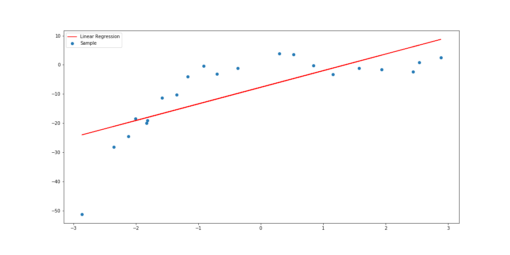
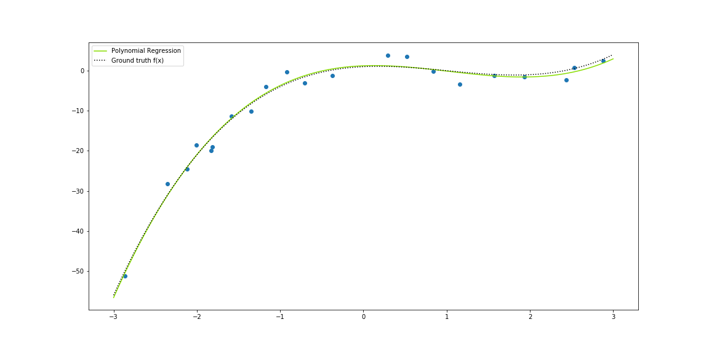

Overview and implementation of Polynomial Regression analysis.
%matplotlib inline
import matplotlib
import matplotlib.pyplot as plt
import numpy as np
from regression__utils import *
Given the function:
$$ \large f(x)=x^3-3x^2+x+1+\epsilon $$# Synthetic data 6
x, y = synthData6()
# Predicting with Linear Regression
# lrs = linearRegression_simple()
# lrs.fit(x, y)

where $\large \mathbf{X}$ (or $\large \mathbf{V}$) is the Vandermonde's matrix of the independent variable, parametrised by the maximum degree $\large m$, a response vector $\large \vec{y}$, a parameter vector $\large \vec{\mathbf{\beta}}$ and a random error vector $\large \vec{\epsilon}$. In the form of a system of linear equations, we have:
$$ \large \begin{bmatrix} y_1 \\ y_2 \\ y_3 \\ \vdots \\ y_n \end{bmatrix} = \begin{bmatrix} 1 & x_1 & x_1^2 &\cdots & x_1^m \\ 1 & x_2 & x_2^2 & \cdots & x_2^m \\ 1 & x_3 & x_3^2 & \cdots & x_3^m \\ \vdots & \vdots & \vdots & \ddots & \vdots \\ 1 & x_n & x_n^2 & \cdots & x_n^m \end{bmatrix} \begin{bmatrix} \beta_1 \\ \beta_2 \\ \beta_3 \\ \vdots \\ \beta_m \end{bmatrix} + \begin{bmatrix} \epsilon_1 \\ \epsilon_2 \\ \epsilon_3 \\ \vdots \\ \epsilon_n \end{bmatrix} $$By means of the Least Squares Method, the estimated coefficient vector is given by:
$$ \large \widehat{\vec{\mathbf{\beta}}}=(\mathbf{X}^T\mathbf{X})^{-1}\mathbf{X}^T\vec{y} $$def arraycast(f):
'''
Decorador para conversão de vetores e matrizes
'''
def wrap(self, X, y=[]):
X = np.array(X)
if list(y):
y = np.array(y)
return f(self, X, y)
return f(self, X)
return wrap
class polynomialRegression(object):
def __init__(self, degree=1):
self._degree = degree
self._beta = None
@property
def beta(self):
return self._beta
@arraycast
def fit(self, X, y=[]):
V = np.stack([X**i for i in range(self._degree + 1)], axis=0).T
VTV = np.dot(V.T, V)
VTV_i = np.linalg.inv(VTV)
Vi = np.dot(VTV_i, V.T)
self._beta = np.dot(Vi, y)
@arraycast
def pred(self, x):
V = np.stack([x**i for i in range(self._degree + 1)], axis=0).T
return np.dot(V, self._beta)
Notice that our class has an attribute called degree which is the maximum degree of our function $\large f(x)$. In our example it should be $\large m=3$.
%%time
polreg = polynomialRegression(3)
polreg.fit(x, y=y)
Wall time: 7.99 ms
